RTR: Imperium Surrectum
RTR: Imperium SurrectumThe Thracians
2024-02-11 · jottel
Hello, and welcome everybody to a belated dev diary for our Thracian factions in 0.6. Many of you have now probably played with or against them already, but you may want to know more in terms of their history, so strap in! From west to east, we start with the Kingdom of Paionia, north of Macedonia. They inhabited the valley and mountains around the Axios River. They look back at a long history, as they are already mentioned by Homer as allies of the Trojans. What exactly their origin was, has not been entirely confirmed, as they could be Thracians, Thraco-Illyrians, or even Greeks, though in RIS we settled on a Thracian origin of the Paionians. During the Persian invasion of Greece, a large part of the Paionians residing on the Strymon were conquered and deported to Asia. After the retreat of the Persians out of Europe, a large part of Paionia fell under the rulership of the Odrysians. The realm of the Odrysian King Sitalkes is described as extending up to the Laiaian Paionians and the river Strymon, though an independent Paionia began beyond that. Somewhere after the decline of the Odrysian hegemony over Thrace, the Paionians must have established themselves again as a stable kingdom and eventually went to war with their Macedonian neighbours in 359 BC. Philip II of Macedon took advantage of the death of the Paionian King Agis and subjugated them, establishing “Macedonian Paionia”.
Under Philip’s successor, the famous Alexander the Great, they supplied cavalry, and a subtribe of the Paionians, the Agrianes, served as his most trusted peltasts in the army and very reliable allies protecting Macedon’s northern flank against the likes of the Illyrian Autariatai. After the death of Alexander, the Paionians were pressed by the Autariatai and Dardanoi from the north until those were overshadowed by the Celtic invasion of 280 BC. Among them was an army that was explicitly headed for Paionia, under the command of Brennos and Akichorios. Their king at the time, Leon, is attested through coinage and is thus represented in RIS. The invasion left Paionia in a weakened state, and at least the southern part was eventually annexed again by Macedon under Antigonos Doson (c. 227 BC), due to the pressure of the Dardanoi to the north. When Macedonia was dissolved in 167 BC, Paionia was divided up into three of four newly constituted segments, and under Diocletian, Paionia and Pelagonia formed a province called Macedonia Secunda or Macedonia Salutaris.
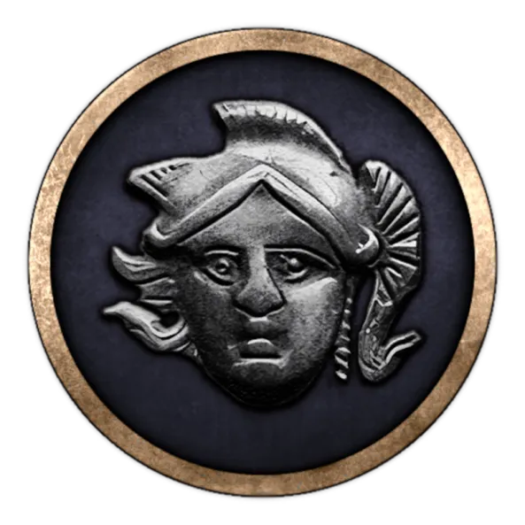
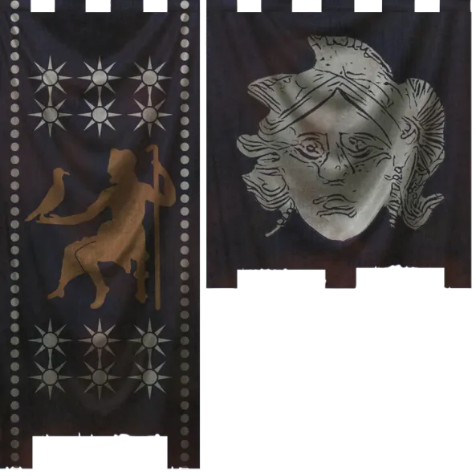
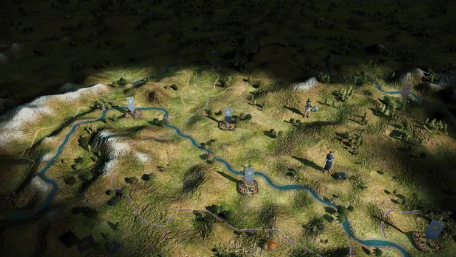
The coin of Leon of Paionia
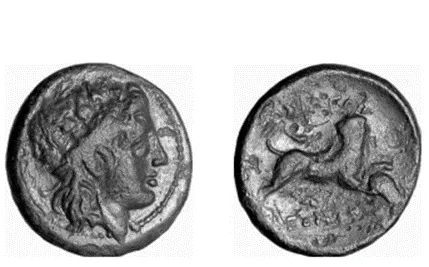
Paionian cavalry
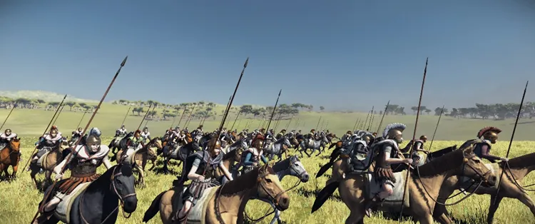
Agrianian Javelinmen
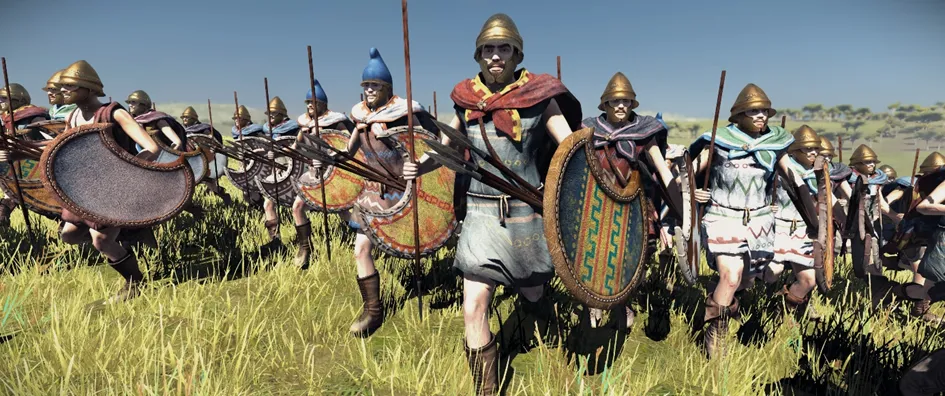
Agrianian Archers
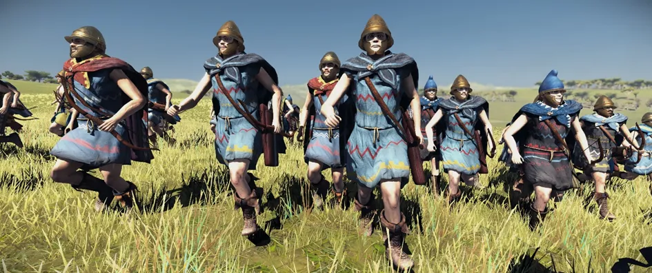
Further northeast, we find the Triballoi, one of the once most powerful Thracian tribes. Though Herodotus already mentions a geographic area carrying their name, we first hear of them as independent people neighbouring the Odrysian Kingdom of Sitalkes through the works of Thucydides. In an attempt to subjugate them, the Thracian king invaded their territory but was defeated in battle and died in their lands. They remained independent throughout the 5th and early 4th century BC, where they repeatedly raided Odrysian territories, even up to Abdera. After the subjugation of Paionia by Philip II of Macedon, the Triballoi posed a serious threat to the Macedonian Kingdom. They expanded further to the northeast, even conducting an invasion against the Scythians under Atheas, probably before Philip’s campaign in Scythia in 339 BC. Philip returned successfully but on his way through Triballian territory, he was intercepted by the latter, his spoils taken away and he himself wounded in battle. Despite this, they were still eventually subjugated by him, as they revolted upon his death in 335 BC. This provoked a military response by Alexander the Great. At that point, they settled closer to the Ister and inland of the Peuce, though Alexander still subdued them. They, like the Odrysians, Agrianes, Paionians, and Illyrians contributed a military force to Alexander’s campaign in Persia, and they remained subject under Antipater, the diadochos of the Macedonian holdings.
During the Celtic invasion of 280 BC, the host led by Kerethrios went specifically after Thrace and the Triballoi. They were additionally attacked by the Celts left behind by Brennos to defend their own frontiers. Subsequent wars and invasions by the Skordiskoi and the powerful Dardanoi eventually forced the Triballoi over the Ister, where they settled in the lands of the Getai. After that, they pretty much disappear as an independent people with political autonomy in the sources, though archaeological data implies that there was an economic and demographic recovery in northwestern Thrace. Chronologically, they are last mentioned by Cassius Dio, who claims that, in 30 BC, the Bastarnae invaded Moesia and the territory of the Triballoi, occupied by the Dardanoi, who had retained their name. In RIS, we chose to depict the Triballoi in the timeframe between gaining independence from the Autariatai and Macedonian kingdom thanks to the invasion of the Celts, but in a very weakened state, compared to their former glory.
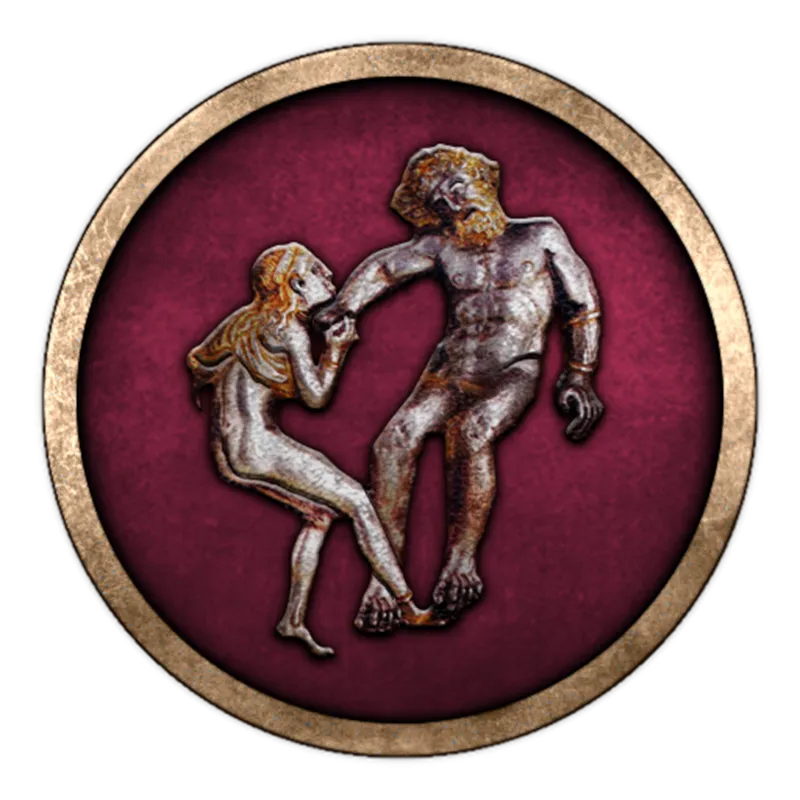
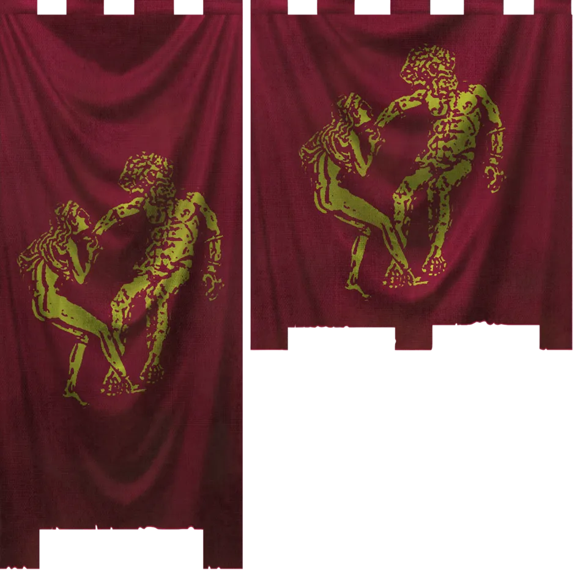
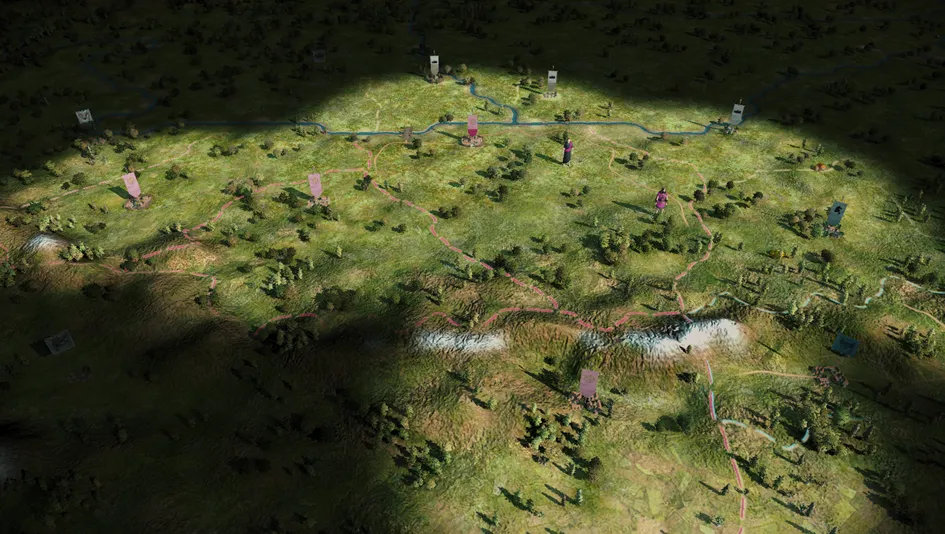
Galato-Thracian Swordsmen: A unit made up of Thracians that were incorporated into the realms of their new Celtic neighbours
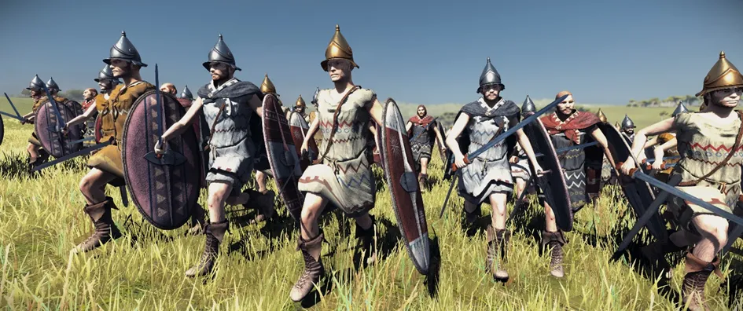
South of the Triballoi are two tribes who likely exploited the former’s weakness to displace them from the Macedonian border. First, from north to south and inhabiting Pautalia on the river Strymon, are the Dentheletai. They are repeatedly mentioned in the sources, mostly as raiders conducting invasions of Macedon in cooperation with their southern neighbours, the Maidoi, or the Celtic Skordiskoi. They were likely just a minor tribe that was continually under the rule of different kingdoms, like the Odrysians, the Triballoi, or the Macedonians, until they gained their independence in the course of the 3rd century BC. In 214 BC, their territory was plundered for supplies by their ally King Philip V of Macedon, whereafter they appeared to have allied themselves to Rome. In 30 BC, the Dentheletai, under the rule of the blind King Sitas, suffered under the Bastarnae invasion of Thrace and called the Romans to help. After a last mention of a raid conducted by the Skordiskoi and Dentheletai into Roman Macedonia, probably as an act of rebellion, they silently disappear from the sources.
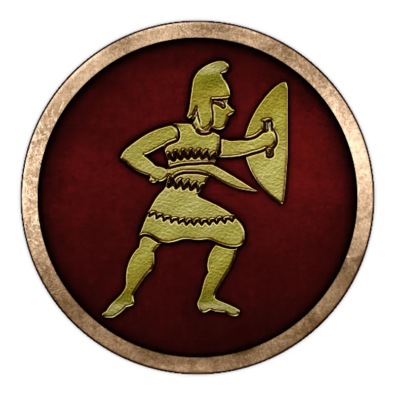
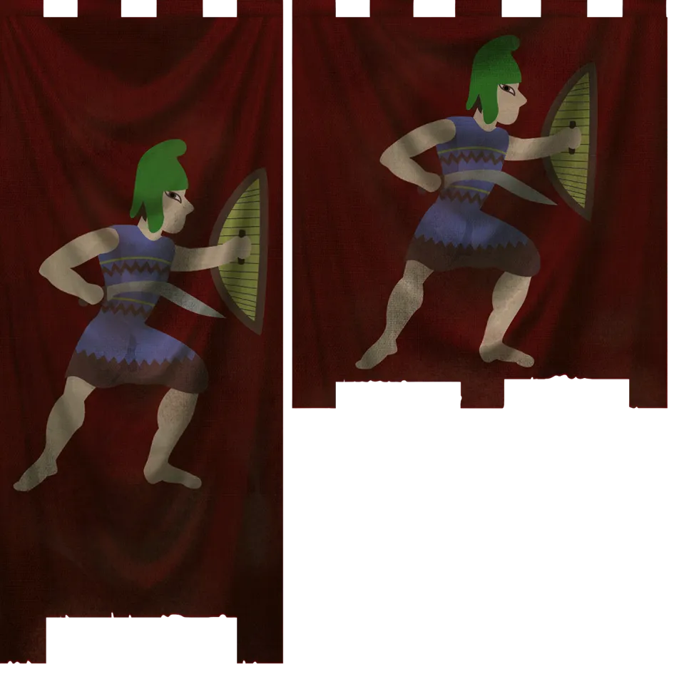
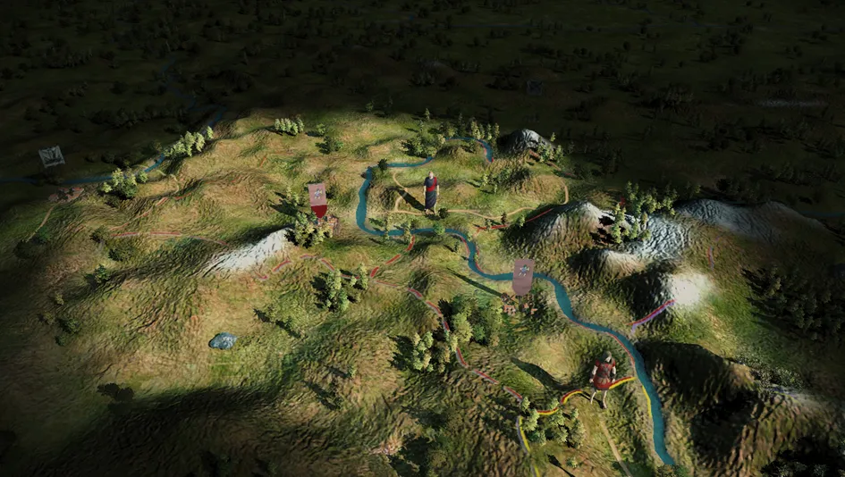
Located south of them are the Maidoi on the Strymon, inhabiting the northeastern border between Macedon and Thrace. While Philip II besieged the Greek cities of Perinthos and Byzantion, the still 16-year-old Alexander successfully campaigned against the Maidoi. Their capital was Iamphorynna, from whence they regularly raided Macedonian territory. It was eventually taken in 211 BC by Philip V in a major campaign directed against the Thracians. Despite his success, the Maidoi did remain an adversary throughout the following century and can be seen raiding Macedon together with the Illyrian Labeatae in 209 BC. Another campaign by Philip followed in 181 BC after he had pillaged his allies, the Dentheletai, as we’ve mentioned before. After the death of Philip, the Maidoi, among other Thracian tribes, chose to seek out the Romans as allies against Perseus. When Rome conquered Macedon, they only made themselves the target of the repeated Thracian incursions from the north, even causing the death of the praetor Sextus Pompeius in 119 BC at the hands of the Skordiskoi, who followed it up with a second invasion supported by the Maidoi under king Tipas. Rome, trying to secure that border, assigned consuls to this province, the first one, Caius Porcius Cato, lost his whole army against the northern neighbours in 114 BC and only his successors in the subsequent years showed success. Another Roman success can be placed in 97 BC against the Dardanoi and Maidoi.
In the long term though, the Thracians always proved hard to pacify, demonstrated by their repeated incursions despite the multiple triumphs that were celebrated between 114 and 97 BC. Mithridates’ war against the Romans pulled the Greek cities on the Black Sea and the Thracian tribes to his side. In the 80s BC it came to sack of Delphoi, when a coalition of Skordiskoi, Maidoi and Dardanoi penetrated the Macedonian province and reached the sacred place to plunder and burn it. Though punitive action was planned by the consul Lucius Cornelius Scipio Asiaticus he only went after the Skordiskoi but was bribed with temple gold by the Maidoi and Dardanoi to leave them unpunished. But in 85 BC, Sulla marched north to finish the job. He and his legate Hortensius invaded the Maidoi and Dardanoi on at least two occasions. In the 70s BC, Roman Macedonian governors then continued campaigning against their northern neighbours, mainly the Maidoi and Dardanoi to eliminate any potential threat from the Thracian allies of Mithridates. In 30 BC, during the aforementioned invasion of the Bastarnae into Thrace, the Maidoi and Serdoi were also arming for war. As Crassus defeated the Bastarnae, he took the opportunity of leading an already mobilised army to campaign against the Maidoi and subdue them as well. In Imperial times that part of the territory is still referred to as the “Maidike” by Ptolemy.
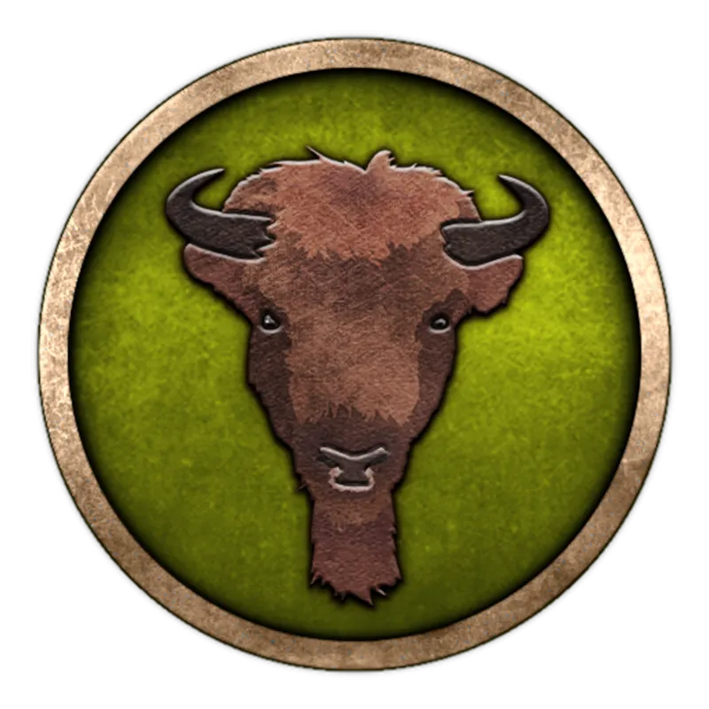
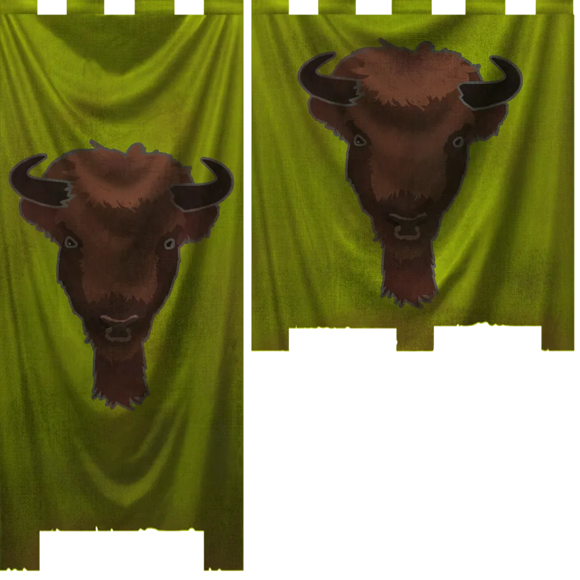
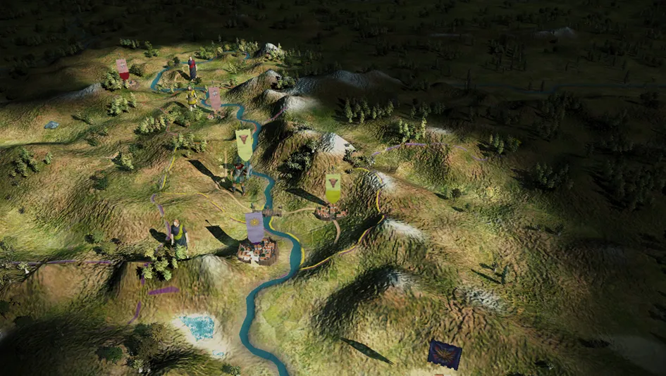
Now we come to the Bessoi, who are already mentioned quite early by Herodotus as people in service of the oracular sanctuary of Dionysos in Thrace. During that time, they were only a subtribe of the Satraians and probably stayed in that kind of humble position under the rulership of the Odrysians. The Dioi, a Thracian tribe from the Rhodope, who were employed as swordsmen and peltast mercenaries by Athens during the Peloponnesian War, might have been a tribe of the Bessoi, as they are later called “Diobessi” by Pliny. Another clue for the existence of the Bessoi during the Classical /Hellenistic period could be a report by Polyaenus who mentions a campaign of Antipatros, against the rebellion of the “Tetrachoritai” who can be identified with the Bessoi, according to Stephanos. Explicitly as Bessoi they only again appear around 183 BC as a target of Philip V’s campaign into Thrace. They might have risen into a hegemonic position, similar to the Odrysians before them. Like the Maidoi, the Bessoi continually pose a threat to the newly established Roman province of Macedonia in the 2nd half of the 2nd century BC and the 1st century BC. In 72 BC they are defeated in battle by Marcus Lucullus, who captures their city Uscudama. Nevertheless, they continued resisting the Romans, who constantly had campaigns against them, like Caius Octavius in 59 BC, Brutus c. 15 years later, and Marcus Licinius Crassus in 29 BC, who took the Dionysos sanctuary in the Rhodope away from them to transfer it to the Odrysians. Around 14 BC, they rose up again under Vologaises, a Dionysos priest, but were suppressed by Lucius Calpurnius Piso 3 years into the war. From then on, they remained under Roman rule, seemingly in poverty and still known for their barbarism, according to Strabo.
In Roman imperial times the Bessoi continued being a recognisable and known tribe, and the term “Bessi” itself became a synonym for Thracians in general. They are christianised in the 4th century AD by the Dacian bishop Niketas, and still appear in ecclesial and byzantine documents in the 6th century AD.
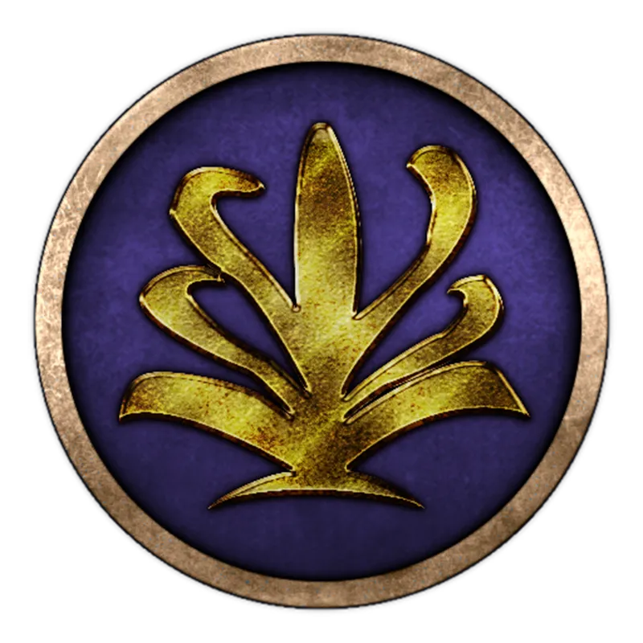
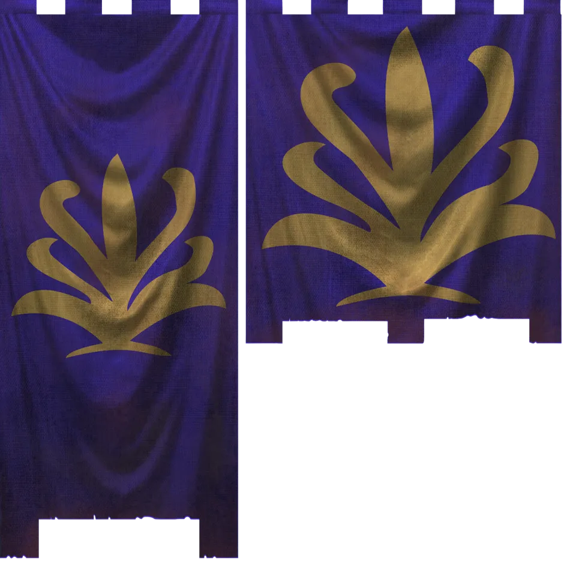
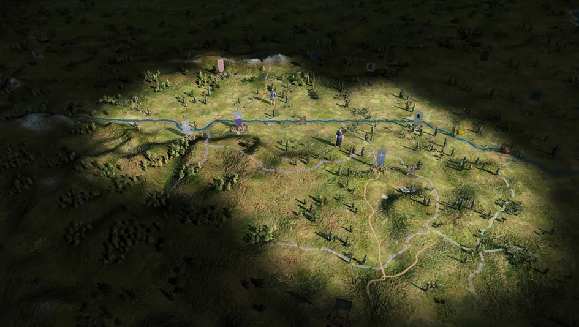
Bessian Swordsmen
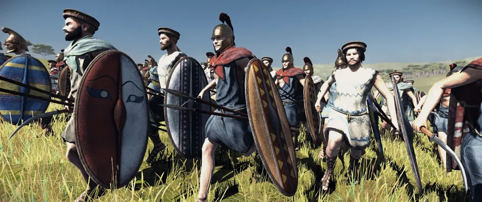
Dii Swordsmen
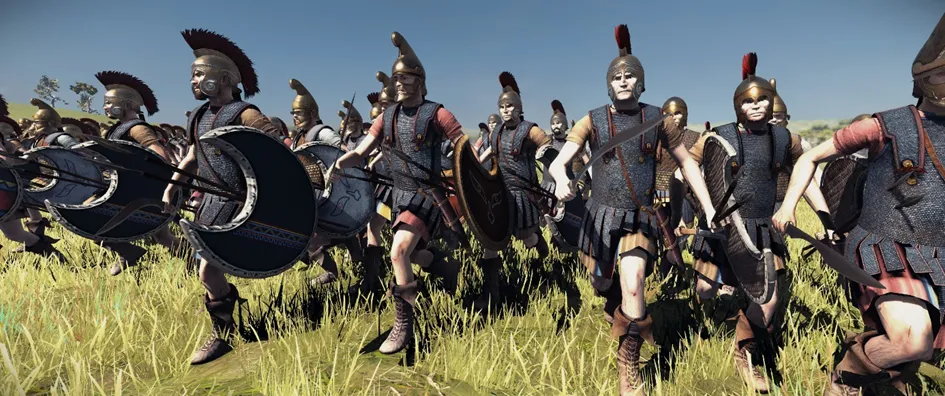
Next up is Kabyle, an old Thracian city that became notable after it was conquered by Philip II of Macedon in 342/41 BC, and subsequently developed into a Hellenistic city with an agora, acropolis, a temple of Artemis Phosphoros, a temple of Apollo and other buildings. Philip first used it as a colony for rebellious Macedonians, but it grew into an important military and trading centre. In RIS, Kabyle is the only Thracian faction that can recruit Greek units like hoplites, due to its close relations with the Hellenistic kingdoms and the settlement of Macedonians in its chora. After 281 BC, Kabyle minted autonomous coins, indicating political independence as a self-governing Hellenistic polis. From that time the coinage of Spartokos is attested, the independent king of Kabyle. Not only that, but in the 220s BC they additionally minted coins with the name Kavaros, the last Celtic king of Tylis. The parallel production of independent silver coins and royal coinage for another ruler implies that they were not part of the Tylian kingdom but were rather important enough to be employed to supply coins for him. In 71 BC, Kabyle was conquered by the Roman legions under Marcus Lucullus and in 45 BC included in the Roman client state of the Sapaioi. After 46 AD it became a major city in the newly established province of Thracia. Multiple inscriptions by Roman emperors imply various building programs, demonstrating its importance as a major city of the region. It was eventually destroyed in the 4th century by the Goths and again in 583 AD by the Avars and only sparsely settled thereafter.
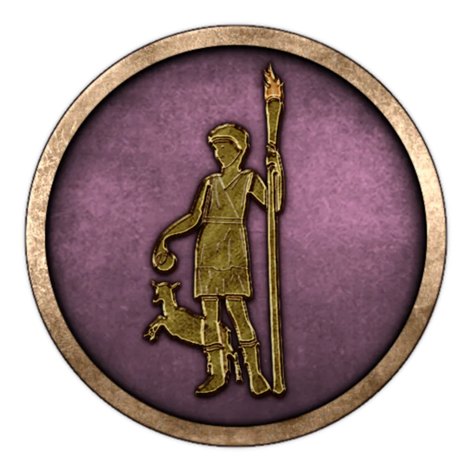
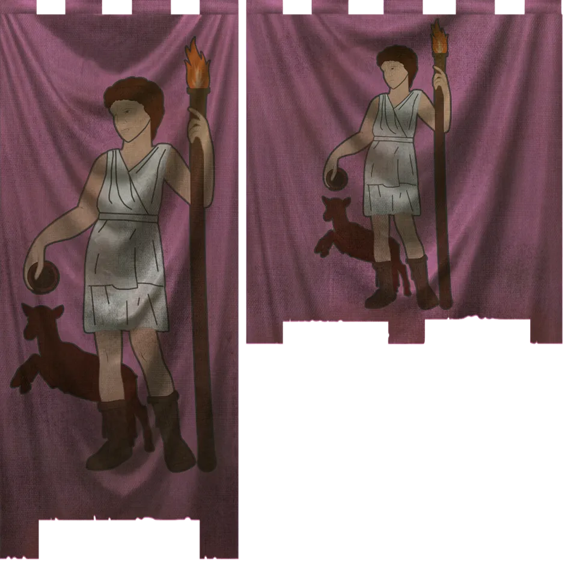
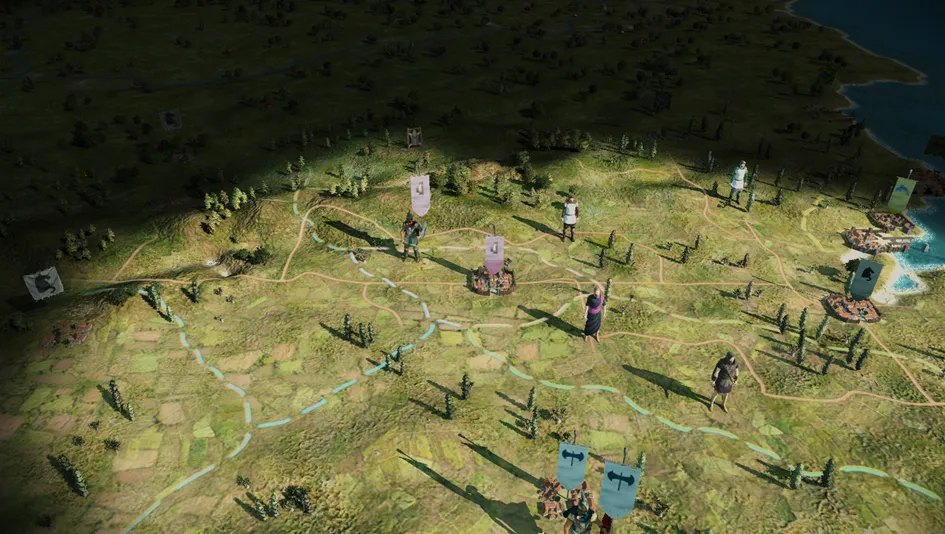
Coin of Spartokos
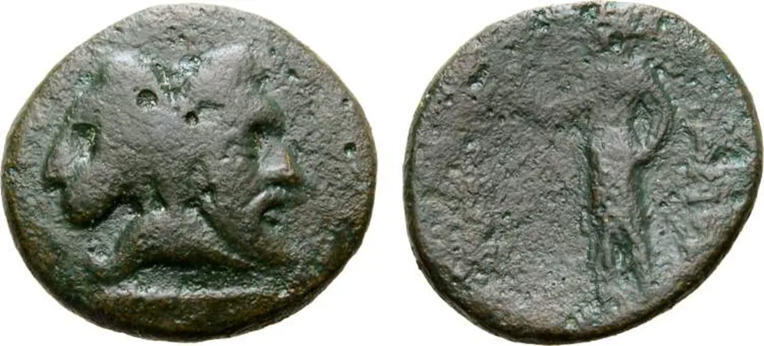
Kabylian Lancers
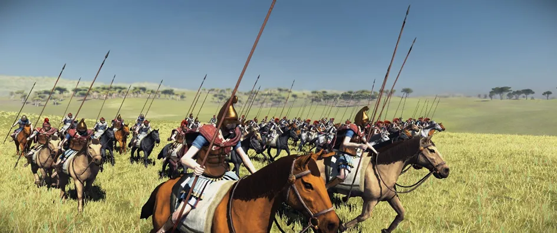
Last but not least, we have the Astai who inhabit southeastern Thrace around their capital of Bizye. Their rise to independence was probably helped by the decline of the Odrysians in the 4th century BC, due to the wars with Philip and Alexander of Macedon, and the Celtic invasion in the early 3rd century BC that caused the destruction of major local powers like the Triballoi or the Thracian kingdom of Lysimachos. Their mentions are rather obscure. They established positive relations with the Greeks on the western Pontic shore and at some point, also with the Macedonian Kingdom of Philip V. In the Second Macedonian War, they fought alongside the Maduatenoi, the Kainoi, and the Korpiloi against Cnaeus Manlius Vulso on his return through Thrace, though for the Third Macedonian War they allied themselves to the Romans in 172 BC. In the 2nd century BC, they expanded their territory, including the city of Kabyle, and by the end of the century, the Odrysian-Astaian dynasty was founded by Kotys, with his capital in Bizye. He ruled from 100-87 BC as a Roman ally and prevented the usurpation of the Macedonian throne under the governorship of C. Sentius. His successors stayed loyal to Rome, as Sadalas I supported Sulla against Mithridates, Kotys II and Sadalas II supported Pompey at Pharsalos (they were pardoned by Caesar), and as luck would have it, Sadalas III supported M. Antonius at Aktion in 31 BC. Their name was preserved in the strategia of Astike.
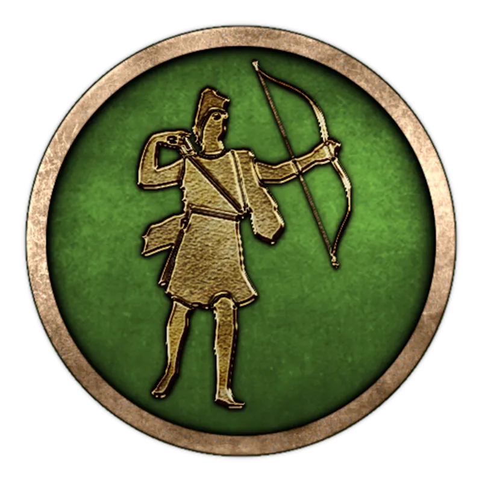
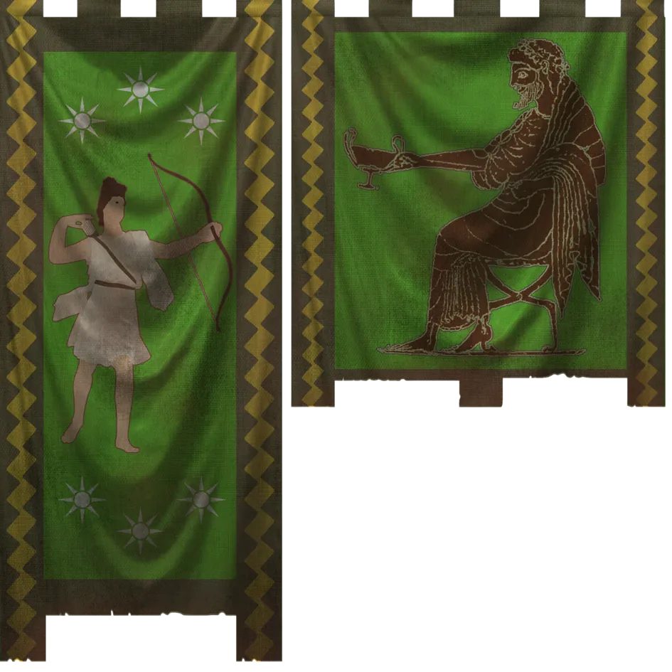
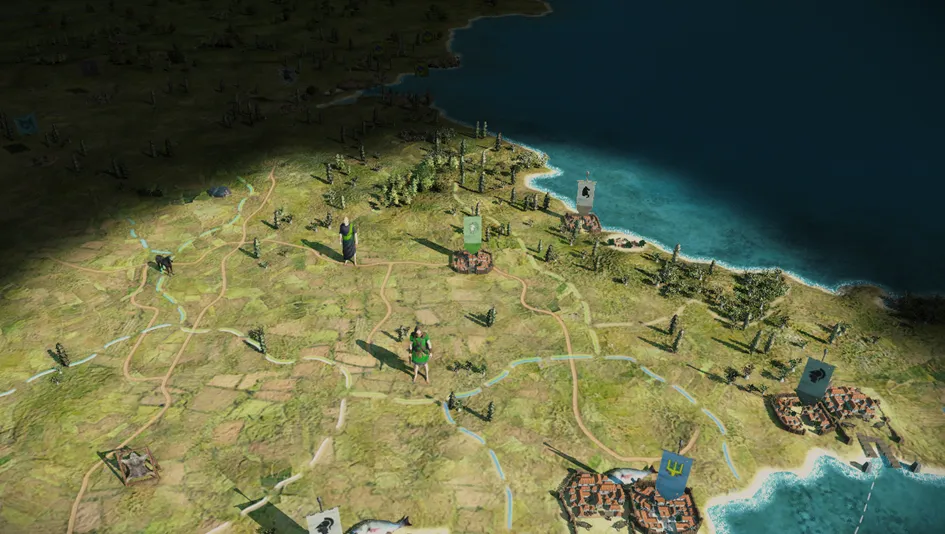
Of course, we should say a few words about the minor tribes represented by the general Thracian faction. With them, we represent the Moisoi (Moesi) in Ratiaria, the Kainoi in Apros and the Terizoi in Terizis. The Moisoi were a group of Thracian tribes settled around the river Timok, south of the Ister, between the Dardanoi, Triballoi, and the Skordiskoi. They are mainly known for the name the Romans gave to the province in this area: Moesia. It’s still not entirely clear if there was a connection between the Moisoi and Mysoi of Asia Minor, or if the Romans just applied the term “Moesi” to the peoples there to imply that connection. In the 4th century BC, the settlement of Ratiaria was founded by the Moisoi, though its name is only attested to us by through the later Romans. It had been fortified by the 1st century BC when it fell into Roman hands. We don’t have a lot of pre-Roman information about that area or the tribe living there. In the early to middle first century BC, the Romans initiated several campaigns into the area of the lower Danube, but Moesia was not incorporated until 29/8 BC by Licinius Crassus and included in the province of Macedonia. The independent province of Moesia was only established in 45/6 AD. The province was of great importance due to its access to the Danube, leading to the establishment of several Roman fortresses and cities, and thus a relatively quick Romanization of the population. Ratiaria was established as a Roman colony, which served as the camp of several legions and the port of the river fleet.
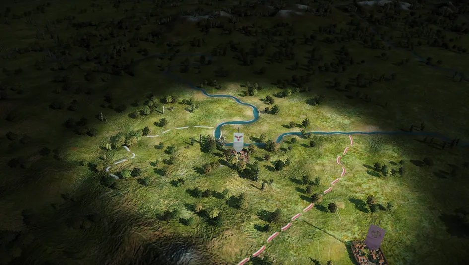
Next are the Kainoi, who reside around Apros. Like the Astai, they were a minor Thracian tribe that benefited from the decline of the Odyrsian Kingdom. In the late 3rd to early 2nd century BC, their king was Diegylis, a wealthy king who was said to have ruled over his people not as a friend but as a tyrant ruling over slaves. Though his negative traits could be a result of later topoi, according to Diodoros, he plundered the neighbouring Greek cities, even captured Lysimachaia from Attalos II of Pergamon, and tortured or killed prisoners. He, or his son, was probably the king who allied himself to Philip V of Macedon and, together with the Astai, ambushed the baggage train of Cnaeus Manlius Volso in 188 BC. Eventually, Diegylis was defeated by Attalos II of Pergamon and later died, probably at the hands of other Thracians. Zibelmios, the successor of Diegylis, however, was no less cruel, punishing Thracians for the death of his father. Likewise, he ended up being captured, tortured, and killed by his fellow Thracians for his actions.
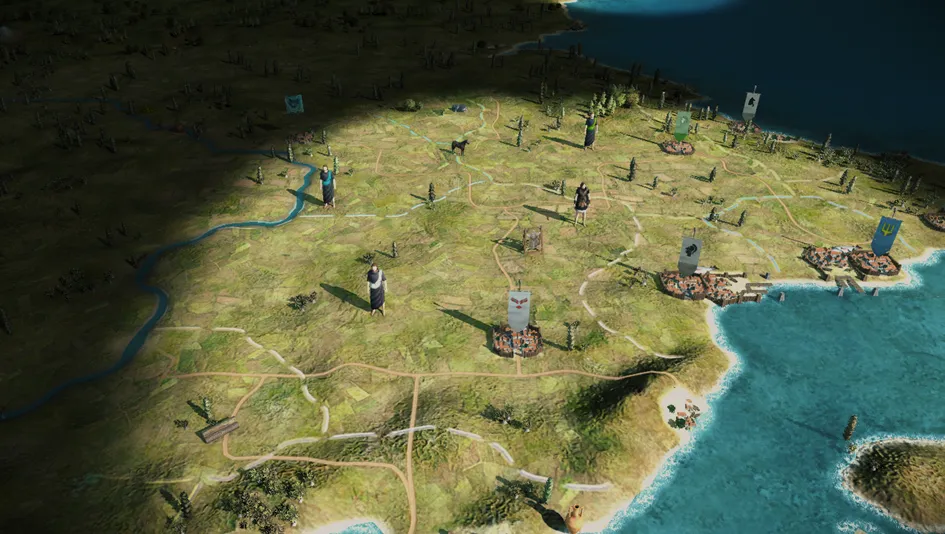
Finally, we have the Terizoi, a Thracian/Getic tribe inhabiting the Tirzis, a “cape” and fortress on the western coast of the Black Sea. It lies on the road between Kallatis and Dionysopolis, overlooking a safe position that was already used by Lysimachos to hide his treasury from Seuthes III and his Thracian army. Their fortified position has kept them safe from the Pontic Pentapolis – for now.
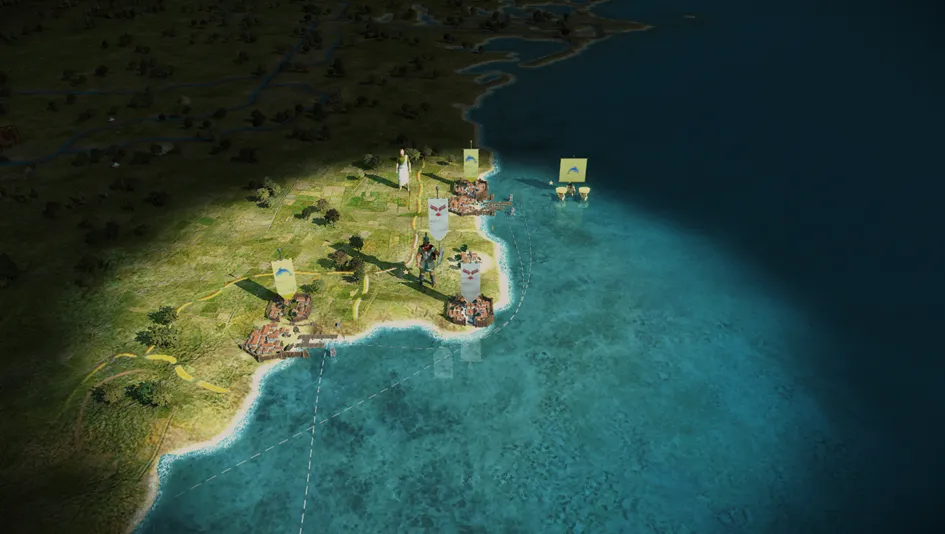
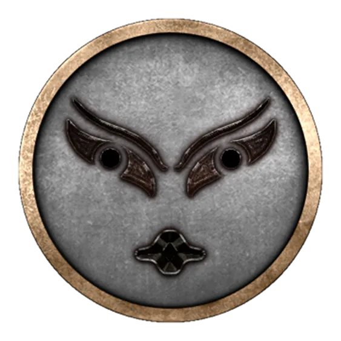
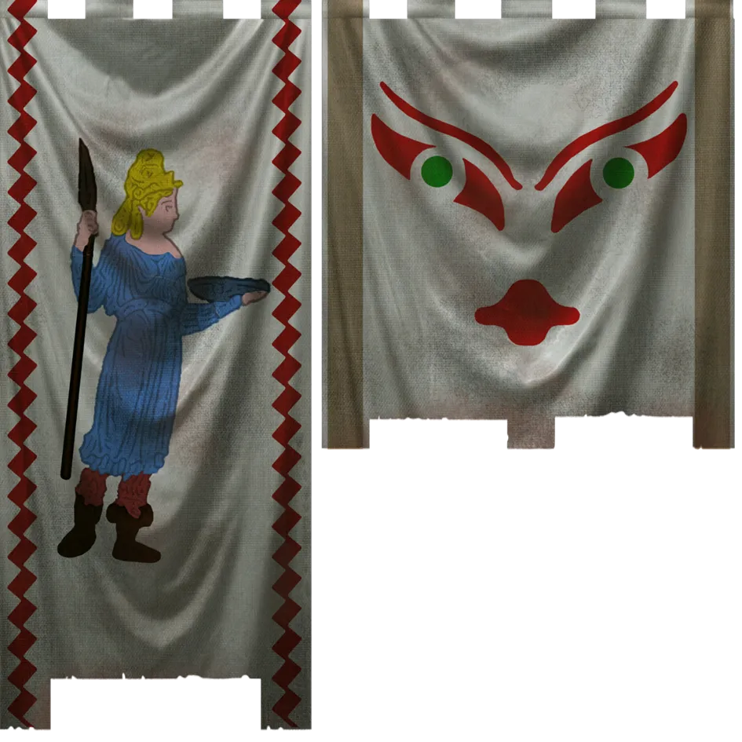
Thynoi Clubmen The boiz of our dear @Red Zed ! They are warriors from the Thynoi tribe in the mountains near Salmydessos, who are armed with javelins and clubs. They appear in Xenophon’s Anabasis as warriors, who raid the camp of the mercenary army of the Ten Thousand. There, they use javelins to kill the Greeks inside the houses, and clubs to break the spears of the Greeks!
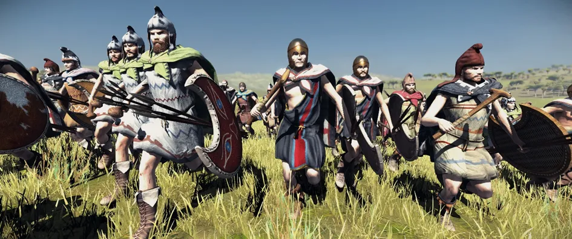
Thracian Longspearmen: A new basic spear unit, made up of peltasts that protect their javelin-throwing brothers in close combat. Their morale won’t hold long under pressure though.
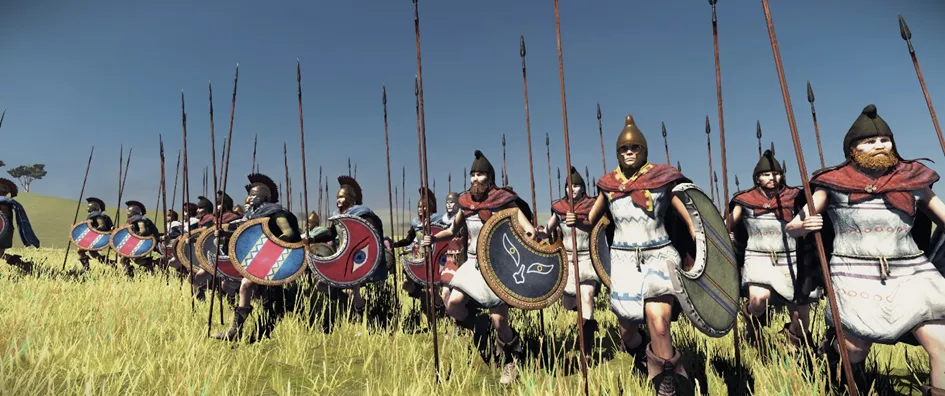
Thracian Sica Cavalry: A new reform unit, armed with the dangerous Thracian sicas that are attested in the sources for cutting off people’s limbs! This made them popular among the Pergamene, Seleucids, and even the Romans!
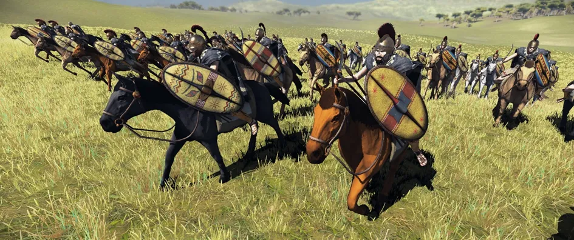
This concludes our previews of the Thracian factions. Discussions can be had in developer-diary-discussion as always. 🙂